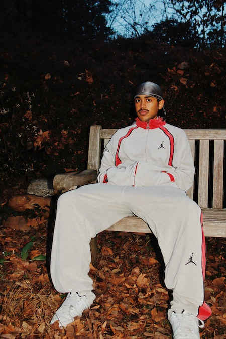
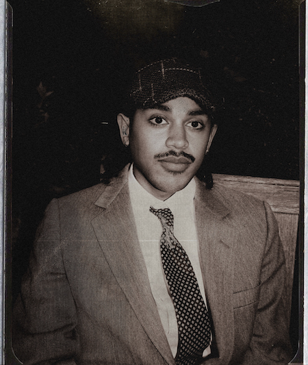
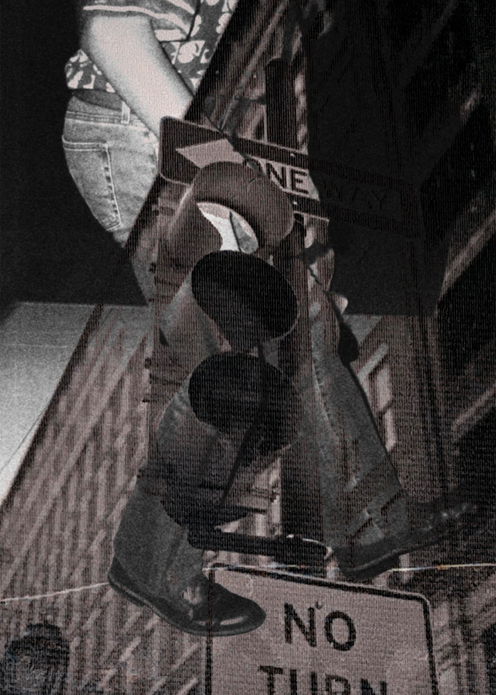
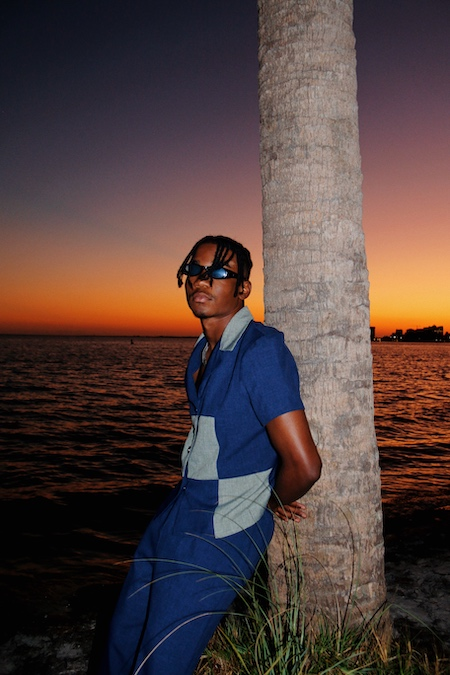
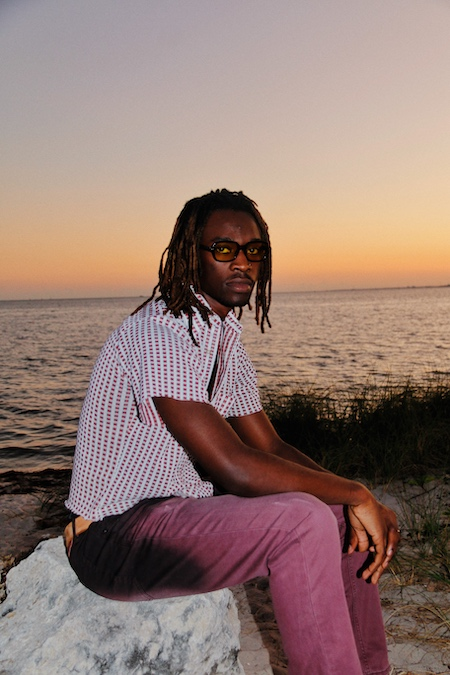

Here you'll find various photography work of mine. Each of these photos have
provided me with different experiences and a chance to better my photography skills.


Living in Color, 2022
Living in Color was a magazine I developed as a final project for an African American
Literature class. The magazine demonstrated how Black culture has dictated and created many of
the most recent trends in pop culture. These photos were utilized in the magazine.
Miami Hurricanes Football, 2033
The Miami Hurricanes take the field against Middle Tennesse. This is apart of my work
done with The Miami Hurricane newspaper.

Block Party, 2022
Double exposure shot on film. Awarded a Gold Key from Scholastic Art and Writing Awards,
the nation's longest-running, most prestigious recognition for creative teens.


All Roads Lead Home, 2023
All Roads Lead Home is an exhibit I held at the VISIONS art event hosted by Black Creatives Collective.
The theme was afrofuturism so my photos represent the wealth and affluence of young Black men in the future.
Miami Hurricanes Basketball, 2022
Wooga Poplar and Jordan Miller talk and shake hands during a Miami Hurricanes basketball game. This is apart
of my work with The Miami Hurricane newspaper.